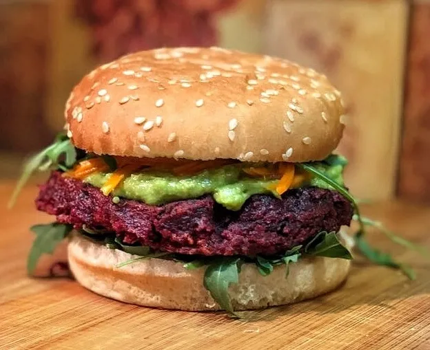

Hamburguesa
La hamburguesa vegetal, vegetariana o vegana es una variante de la hamburguesa tradicional que evita la carne picada para emplear productos vegetales idóneos para los vegetarianos o veganos. Se emplean en su elaboración productos como tofú, seitán o lentejas entre otros..
Pescado Empanizado
El dorado es un pescado muy ligero, con pocas calorías y bajo en grasa. Contiene ácidos grasos que ayudan a prevenir problemas cardiovasculares, vitaminas del complejo B, así como potasio, sodio, fósforo, magnesio, hierro y zinc. Ya lo sabes: comer dorado es una maravilla.
Enchiladas Suizas
La enchilada es un plato muy nutritivo pues contiene no sólo los nutrientes del relleno —carne, vegetales o queso— sino también la tortilla y la salsa que la acompañan que aportarán a su nutrición. Las tortillas de hoy en día —bajas en grasa y sodio— son una buena fuente de calcio, potasio, fibra, hierro y vitaminas B.
Ensalada
Además de contener proteínas de buena calidad, los piñones contribuyen a un aporte de grasas buenas para nuestra salud cardiovascular. Por su parte, las verduras contienen vitaminas, antioxidantes y fibra..
Huevo Revuelto
Alto valor vitamínico y mineral. Tiene 13 vitaminas y minerales esenciales en cantidades necesarias para el buen funcionamiento del cuerpo: vitaminas A, D, E y B12, así como tiamina, riboflavina, niacina, ácido pantoténico, piridoxina, folato, biotina, calcio, hierro, zinc, magnesio, fósforo, potasio, selenio y sodio..
Arrachera
La carne de arrachera proviene de la res, por lo que es una fuente indispensable de proteínas para el ser humano. Ésta ayuda considerablemente en la formación de los músculos, puesto que suministra energía..